The word caloocan comes from the Tagalog root word lo-ok; kalook-lookan (or kaloob-looban) means "innermost area".
Caloocan is divided into 188 barangays.
The city's most celebrated landmark is the monument to the revolutionary Andrés Bonifacio, which stands on a roundabout at the northern terminus of EDSA.
Among the cities in Metro Manila, only Manila, Pasay and Caloocan implement the so-called "Zone Systems". A zone is a group of barangays in a district.
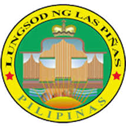
Las Pinas was established as a small fishing port and became a major sea salt-producing municipality, through the use of salt evaporation ponds, dating back to the Spanish Era, the city has grown into an important residential, commercial and industrial suburb of Metro Manila.
Las Piñas is being famous in music due to the historical significance of the Bamboo Organ and the yearly International Bamboo Organ Festival at St. Joseph Parish.
Las Piñas, like other cities of the Philippines, is a local government unit whose powers and functions are specified by the Local Government Code of the Philippines.
Las Piñas is divided into 20 barangays.
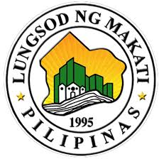
Makati is the financial center of the Philippines; it has the highest concentration of multinational and local corporations in the country.
With a population of 582,602, Makati is the 17th-largest city in the country and ranked as the 41st most densely populated city in the world with 19,336 inhabitants per square kilometer.
Makati is one of the most well-known shopping hubs of Metro Manila. Various shopping centers, offering both international and local retail shops, high-end boutiques, dining outlets and entertainment facilities can be found around the city.
Makati is divided into 33 barangays (the smallest local government units) which handles governance in a much smaller area.
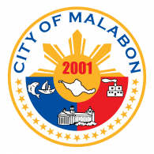
Malabon, per legend, came from the words maraming labong which means "plenty of labong", the edible bamboo shoots.
Malabon is one of the most densely populated cities in The Philippines and its low-lying, flat terrain makes it prone to frequent flooding, especially during high tides, heavy rains and when river and dams overflow.
Malabon industries include sugar refinery, patis- (fish sauce) making, cigar-making, candle production, fishing and ilang-ilang flower-extract production (the distilled perfume is exported).
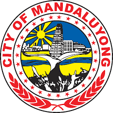
It is known for the Ortigas Center, a commercial and business center that is also shared with Pasig.
Mandaluyong is politically subdivided into 27 barangays.
The city is home to a number of shopping centers, entertainment hubs, commercial establishments, high-rise offices, residential condominiums and hotels. The city is one of the important business and financial areas in the metropolis.
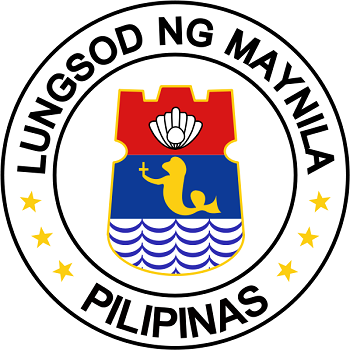
Manila is the capital of the Philippines and the most densely populated city proper in the world.
Maynilà, the Filipino name for the city, originated from the word nilà, referring to a flowering mangrove tree that grew on the delta of the Pasig River and the shores of Manila Bay.
Manila is a major center for commerce, banking and finance, retailing, transportation, tourism, real estate, new media as well as traditional media, advertising, legal services, accounting, insurance, theater, fashion, and the arts in the Philippines.
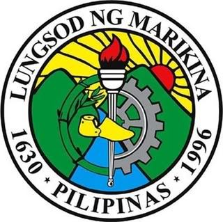
Located along the eastern border of Metro Manila, Marikina is the main gateway of Metro Manila to Rizal and Quezon provinces through Marikina–Infanta Highway.
Marikina was the provincial capital of the Province of Manila from 1898 to 1899.
Marikina was given the title "Shoe Capital of the Philippines" because of its notable shoe industry, being the biggest manufacturer of shoes in the Philippines, producing almost 70% of shoes manufactured in the country.
Marikina is subdivided into 16 barangays.
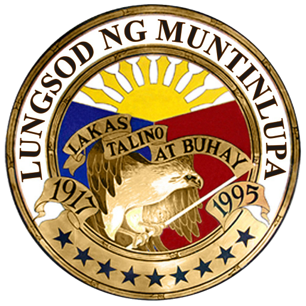
Muntinlupa is known as the location of the national insular penitentiary, the New Bilibid Prison, where the country's most dangerous criminals were incarcerated, as well as the location of Ayala Alabang Village, one of the country's biggest and most expensive residential communities, where many of the wealthy and famous live.
Muntinlupa is composed of a lone congressional district, and two legislative districts which are further subdivided into nine barangays.
Shopping Centers in Muntinlupa include Alabang Town Center and Ayala Malls South Park owned by Ayala Malls popular for the people for the citizens of Southern Manila, Festival Alabang owned and operated by Filinvest Development Corporationit has an area of 20 hectares, Starmall Alabang (formerly known as Metropolis Star Alabang), and SM Center Muntinlupa owned by SM Prime Holdings.
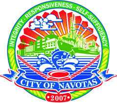
Navotas is a city in the Philippines located north of Manila that is known as the Fishing Capital of the Philippines. The city has the third largest fish port in Asia and the largest in Southeast Asia.
Navotas was originally a contiguous part of Malabon and was not separated from it by a body of water.
Navotas is a coastal town in the northwest part of Metro Manila.
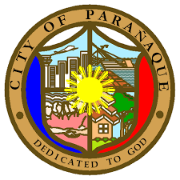
Owing to Parañaque's strategic location, it is an important centre for trade and business in Metro Manila. Baclaran, where a large number of dry goods stores are located, is one of the busiest markets in the country.
The principal malls include SM City Sucat (opened in July 2001), SM City Bicutan, and SM City BF Parañaque (opened in 2016), all owned and operated by SM Supermalls of SM Prime Holdings.
Parañaque is famous for its lively festivals, such as the caracol, a festival that revolves around boats.
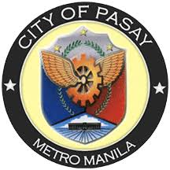
Pasay is composed of seven districts, subdivided into 20 zones, with a total of 201 barangays.
Philippine Airlines is headquartered in the Philippine National Bank Financial Center beside the World Trade Center Manila in Pasay City.
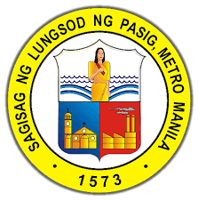
Pasig was formerly part of Rizal province before the formation of Metro Manila, the National Capital Region of the country.
The city's name Pasig was believed to have come from the old Sanskrit word "pasega", or "sand", which refers to the tribal community beside the sandy edges of the river.
Pasig is politically subdivided into 30 barangays.
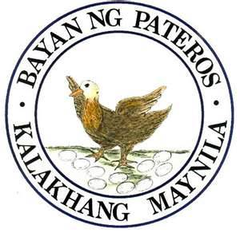
This municipality is famous for its duck-raising industry and especially for producing balut, a Filipino delicacy that is boiled, fertilised duck egg.
Pateros is also known for the production of red salty eggs and "inutak", a local rice cake. Moreover, the town is known for manufacturing of "alfombra", a locally-made footwear with a carpet-like fabric on its top surface.
The name Pateros is most likely derived from the duck-raising industry.
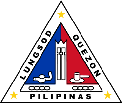
Quezon City is the most populous city in the Philippines. It was founded by and named after Manuel L. Quezon, the 2nd President of the Philippines, to replace Manila as the national capital.
The commercial center of the city is in Cubao, Araneta Center, owned by the Araneta family, where many shopping malls and the Aurora Tower can be found.
Quezon City is home to the Philippines' major broadcasting networks.
The city has several major educational institutions. Two of the most well-known are the University of the Philippines Diliman and the Ateneo de Manila University, both comprehensive research universities consistently ranked among the best in the country.
San Juan is a highly urbanized city in the Philippines located in the center of Metropolitan Manila (also known as Metro Manila).
It is historically known as the site of the first battle of the Katipunan, the organization which led the 1896 Philippine Revolution against the Spanish Empire.
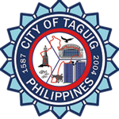
From being a thriving fishing community along the shores of Laguna de Bay, it is now an important residential, commercial and industrial center.
The local government of Taguig currently administers Bonifacio Global City, which is considered as one of Metro Manila's central business districts alongside Makati CBD and Ortigas Center.
Taguig is politically subdivided into 28 barangays.
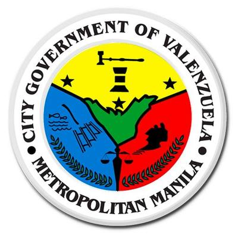
Valenzuela is categorized under Republic Act Nos. 7160 and 8526 as a highly urbanized, first-class city based on income classification and number of population.
Valenzuela was named after Pío Valenzuela, a physician and a member of the Katipunan, a secret society founded against the colonial government of Spain.
A former agricultural rural area, Valenzuela has grown into a major economic and industrial center of the Philippines when a large number of industries relocated to the central parts of the city.